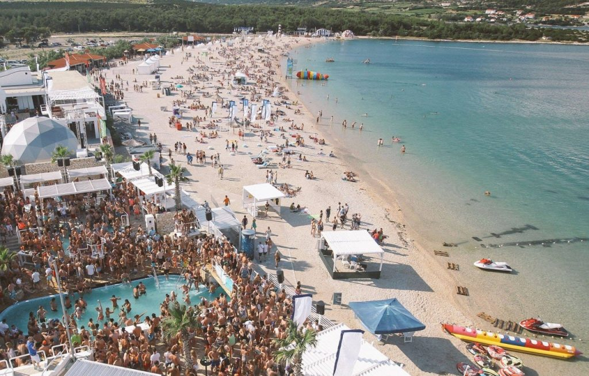
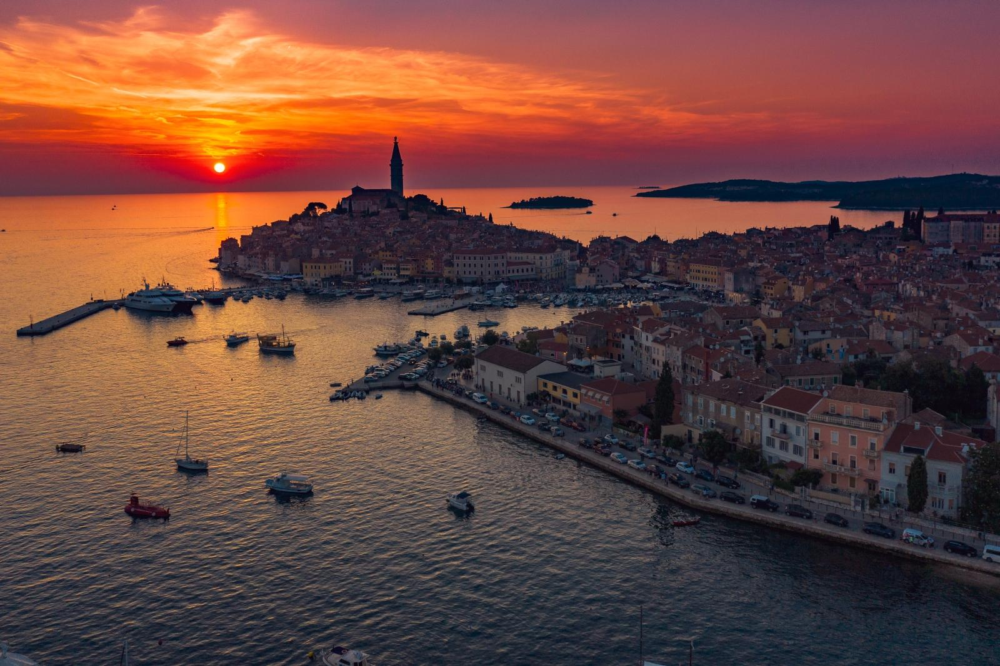
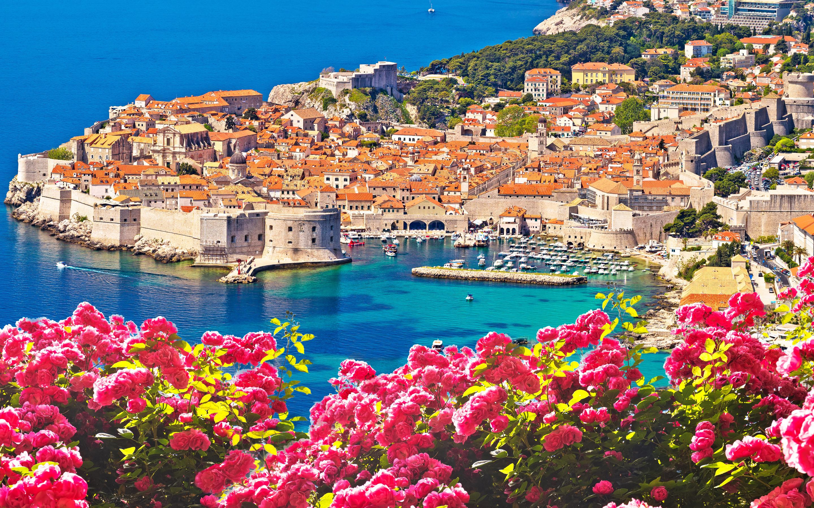

Zrće važi za jedno od najboljih mesta za letnji provod u Evropi.
Žurke traju svaki dan, celi dan, a mladi iz svih krajeva sveta dolaze upravo na ovo ostrvo.
Klubovi poput „Papaye“ i „Novalje“ nude nezaboravan program, uz dobru muziku i zavodljive plesačice.
Cene smeštaja se kreću od 24 do 120 evra za noć. Ukoliko zelite neku lokaciju na kojoj zelite da se odmorite
i da lezite i uzivate na plazi, bolje zaobidjite Zrce.

Rovinj je predivno malo mesto u Istri, mnogi ga smatraju najlepsom lokacijom na celom Jadranu.
Rovinj je spoj starog i novog, odnosno osnovu grada cini tradicionalna italijanska gradnja iz 19.veka,
dok je noviji deo grada izuzetno moderan i cine ga luksuzni hoteli.
Rovinj je prepoznatljiv po predivnim divljim plazama, more je tirkizno i mirno. Nocni zivot u Rovinju vam
moze biti zanimljiv koliko god godina da imate.
Prednost ovog mesta je i to sto se nalazi u blizini prelepih destinacija poput Poreca,Brijuna...

Iako najčešće srpski turisti biraju Dubrovnik za letovanje zbog prisećanja na mladost, kada je bilo uobičajeno
da se u tom gradu provodi letnji odmor, ovo letovalište je izuzetno čest izbor i turisa iz celog sveta.
Plaže su mahom prekrivene šljunkom, a ima i dosta divljih plaža i uvala, u kojima turisti zaista uživaju.
Mana ove lokacije je sto je za mnoge veoma skupa, cak se i stranci zacude cenama u Dubrovniku.
